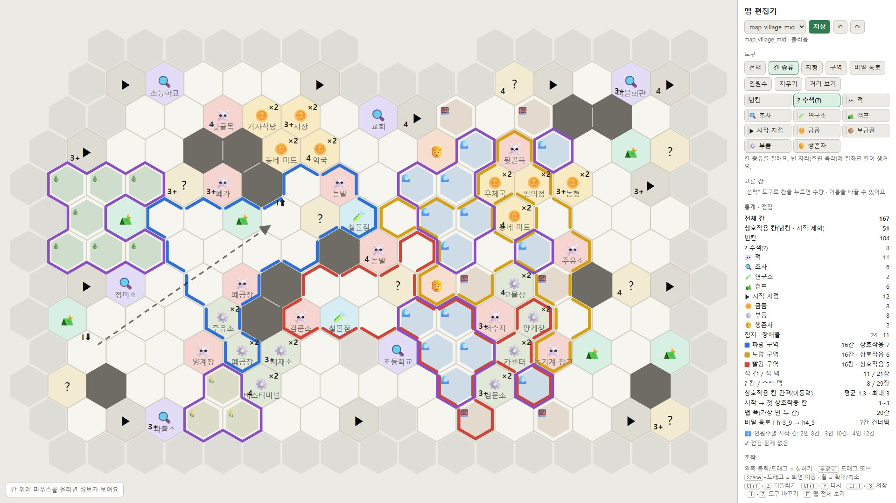

AI PROJECT
아이디어를 플레이어블로 만든 방법
무엇을 왜 만들지는 직접 정하고, 구현과 반복 실험은 Claude Code에 맡겼습니다. 그 분담이 흔들리지 않도록 진행 방식과 코드 구조를 처음에 정해 두었습니다.
문제: 규칙서만으로는 재미를 확인할 수 없었다
혼자 만드는 보드게임이라 규칙을 머릿속과 문서로만 다듬고 있었습니다. 이 방식은 진척이 느렸고, 무엇보다 실제로 재미있는지 확인할 방법이 없었습니다. 종이 프로토타입은 함께 해 줄 사람과 시간이 필요하고, 규칙을 바꿀 때마다 다시 만들어야 합니다.
그래서 순서를 바꿨습니다. 규칙을 그대로 실행하는 디지털 프로토타입을 먼저 만들고, 화면으로 직접 해 보면서, 같은 규칙으로 AI끼리 수백 판을 돌려 숫자로 확인하기로 했습니다. 규칙을 바꾸면 그날 바로 테스트와 플레이로 판단할 수 있게 하는 것이 목표였습니다.
역할 분담
코드를 직접 짜지 않는 기획자로서, 판단과 결정은 직접 하고 구현과 실행은 맡겼습니다.
- 게임 컨셉과 규칙서 작성
- 캐릭터, 카드, 적, 미션, 시설 등 콘텐츠 설계
- 규칙 변경과 밸런스 결정 (실험 결과를 보고 채택, 조정, 철회)
- 직접 플레이하고 화면, 조작, 규칙 수정 사항을 묶어서 전달
- 무엇을 먼저 만들고 무엇을 뺄지 작업 범위 판단
- 규칙서의 빈칸과 모순을 찾아 질문 목록으로 정리
- 규칙을 JSON 데이터, 룰 엔진, 3D 플레이 화면으로 구현
- AI 상대 3단계와 자동 테스트
- AI 대전 시뮬레이션과 밸런스 보고서, 비교 실험
- 설명서만 보고 처음 플레이하는 "AI 테스터" 진행
"AI 테스터"는 사람이 아니라, 코드와 데이터를 볼 수 없게 막고 게임 화면과 설명서만 보고 플레이하게 한 AI 에이전트입니다. 사람의 플레이 피드백은 모두 제가 직접 플레이한 결과입니다.
진행 방식
작업 하나를 이 순서로 진행했습니다.
계획을 먼저 받고 승인한 뒤 진행해서, AI가 방향을 잘못 잡은 채 멀리 가지 않도록 했습니다. 단계마다 모델을 고른 것은 큰 설계 판단과 단순 반복 작업에 드는 비용을 나누기 위해서입니다.
모든 결정은 이유와 함께 작업 이력 문서에 남겼습니다(136건). 대화 기록이 넘어가도 Claude Code가 이 문서를 읽고 이어서 작업할 수 있고, 나중에 "왜 이렇게 됐는지"를 다시 확인할 수 있습니다.
진행 단계
달력으로는 약 4주이고, 실제로 작업한 날은 18일입니다.
앞의 8일은 규칙서의 빈칸을 메우고 데이터, 엔진, 테스트를 다지는 데 썼습니다. 기반을 먼저 단단히 해 둔 덕분에 3D 화면과 AI 상대는 하루 만에 붙었고, 9일째(9월 30일)에 처음 플레이할 수 있게 됐습니다. 나머지 9일은 직접 플레이하고 검증하며 정식 판으로 다듬은 시간입니다.
구조 설계: 나중을 위한 결정이 기능을 쉽게 붙게 했다
나중에 다른 엔진으로 옮기고 온라인까지 가더라도 갈아엎지 않도록, 처음부터 아래 원칙을 정해 두었습니다.
규칙과 화면 분리
룰 엔진은 화면 없이 돌아갑니다. 같은 엔진으로 브라우저 플레이, 수백 판 시뮬레이션, 테스트를 모두 돌립니다.
모든 행동은 데이터
"이 캐릭터를 이 칸으로 이동" 같은 행동을 데이터로 내고, 엔진이 규칙에 맞는지 판정합니다. AI도 행동 데이터를 내는 또 한 명의 플레이어입니다.
시드 기반 랜덤
같은 시드와 같은 행동 목록이면 같은 게임이 나옵니다. 버그가 난 판을 그대로 다시 재현할 수 있습니다.
카드 효과는 블록 조합
효과를 카드마다 코딩하지 않고 "코인 내기", "보급품 얻기" 같은 효과 블록 65종을 조합합니다. 새 카드는 대부분 데이터만 추가하면 됩니다.
이 구조 덕분에 작게 붙은 기능
| 기능 | 구조와의 연결 |
|---|---|
| AI 상대 | 엔진 입장에서 AI는 행동 데이터를 내는 좌석일 뿐이라, 사람 자리와 같은 방식으로 붙었습니다. |
| 자동 테스트와 밸런스 보고서 | 화면 없이 엔진만 돌리면 되므로 150판을 약 4분에 돌립니다. |
| 이어 하기 | 게임 상태가 처음부터 순수 데이터라, 행동이 들어갈 때마다 상태를 그대로 저장하면 됩니다(약 12KB). AI는 기억 없이 매번 자기가 볼 수 있는 정보만 보고 판단하므로 따로 저장할 것이 없습니다. 규칙 데이터가 바뀌면 옛 저장은 자동으로 무시합니다. |
| 규칙 A/B 비교 | 차례 진행 방식을 설정값으로 바꿔 끼우는 자리가 이미 있어, 기존 규칙 코드를 건드리지 않고 새 버전을 나란히 넣었습니다. |
카드 데이터 예시
브로커 전용 카드 "뇌물": 코인 2를 내고 드러난 보급품 중 1장을 얻습니다.
직접 고치는 도구: 맵 편집기
자주 조정해야 하는 부분은 AI를 거치지 않고 직접 고칠 수 있게 툴을 만들었습니다.

맵의 칸 배치처럼 직접 보면서 자주 바꿔야 하는 부분을 매번 AI에게 말로 설명해서 고치게 하면 느리고, 의도도 정확히 전달되지 않습니다. 그래서 조정이 필요한 부분은 직접 수정할 수 있도록 맵 편집기를 만들었습니다. 이 툴로 고칠 때는 AI가 필요 없습니다.
- 칠한 결과는 저장하면 게임 데이터(JSON)에 바로 반영되고, 다음 판부터 그대로 적용됩니다.
- 이동 거리는 게임 엔진의 계산을 그대로 써서 게임과 같은 값이 나옵니다.
- 칸 종류별 개수와 적 덱 비교, 상호작용 칸 사이의 간격, 시작 칸에서 갈 수 없는 칸 같은 문제를 저장 전에 바로 점검합니다.
- 실제로 10월 18일에는 시작 칸 위치, 수색 칸 배치, 인원수에 따라 쓰는 시작 칸을 편집기로 직접 고쳐 저장했습니다.
규칙이 확정되면 카드도 같은 방식으로 관리 툴을 만들어 직접 수정할 예정입니다. 카드 효과가 이미 효과 블록 조합의 데이터로 되어 있어 툴로 다루기 좋은 구조입니다.